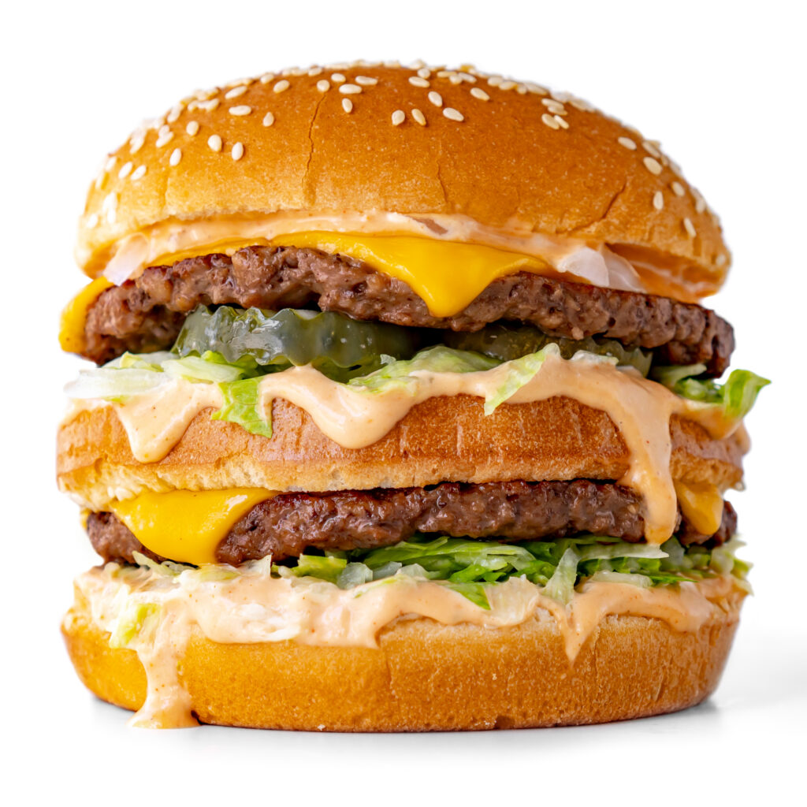

Big Mac

Description
While McDonald’s has not shared the recipe for its iconic burger, many home-chefs have attempted to make the sandwich at home to satisfying results.
According to chef and food writer Gizzi Erskine, it’s easy to make both the Big Mac sauce and the burger at home.
Engredient
For sauce:
-
3tbsp finely chopped onion
-
200g mayo
-
30g ketchup
-
1tsp sugar
-
2tbsp chopped pickles
-
2-3tbsp of dill pickle brine
-
1tsp or onion/garlic powder
-
1/2tsp smoked paprika
For burger:
-
2 80g beef patties (20 per cent fat)
-
2 buns
-
Chopped onion
-
Lettuce
-
Sliced pickles
-
Processed cheese slices
Steps
For Sauce
- Pour boiling water over the diced onion and leave for five minutes
- Put 2tbsp of the mixture in a mixing bowl with the mayo, ketchup, mustard, sugar, chopped pickles, dill pickle brine, onion/garlic powder and smoked paprika.
- Mix together and leave for at least 30 minutes
For the burger
- Split the bun into three across-ways
- Toast it
- spreading 1tbsp Big Mac burger sauce over the base of the bottom and middle slice and adding 1tsp of the chopped onion between the two bases.
- Add a handful of lettuce and pickle slices, and a slice or two of processed cheese.
- the final step,is to “Pop back into the pan and cover with a lid and dash about tbsp of water under it to steam the cheese melted and heat the burger to hot!”